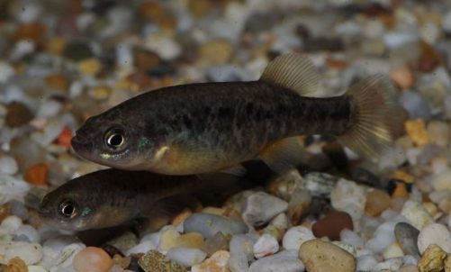

Systématique
- Ordre : Cyprinodontiformes
- Famille : Goodeidae
- Genre : Allotoca
- Espèce : A. catarinae
- Auteur : de Buen, 1947

Allotoca catarinae est un poisson Goodeidé endémique du Mexique, occupant une aire de répartition très restreinte. Elle se distingue par un corps relativement allongé pour le genre et une livrée assez sobre, dominée par des tons grisâtres à beiges, avec une ligne latérale sombre souvent fragmentée en une série de taches ou de barres verticales irrégulières.
En termes de dimensions, la femelle est plus imposante, atteignant généralement 5 à 6 cm, tandis que le mâle reste plus svelte et mesure environ 4 à 5 cm. C'est une espèce fragile, moins tolérante que certains autres goodeids aux écarts de maintenance, et elle est considérée comme l'une des espèces les plus délicates du genre Allotoca.
Cette espèce présente un tempérament discret et peut se montrer craintive si l'aquarium ne dispose pas de suffisamment de cachettes. Contrairement à d'autres goodeids plus agressifs, Allotoca catarinae est relativement paisible, bien que les mâles puissent parader et se chasser brièvement pour établir une hiérarchie.
Elle vit naturellement dans des eaux claires et calmes, souvent associées à des sources ou des petits cours d'eau de montagne. Elle est extrêmement sensible à l'accumulation de nitrates et aux variations brusques de température. Un environnement stable avec une filtration biologique mature est indispensable. Elle apprécie la présence de plantes flottantes et de mousses qui sécurisent son environnement.
Mode : Vivipare matrotrophe.
Comme les autres membres de la famille, elle possède une biologie reproductive complexe où les embryons sont nourris in utero via des trophotaeniae. La gestation dure environ 50 à 60 jours. Les portées sont généralement modestes, comptant entre 10 et 25 alevins par cycle, selon l'âge et la taille de la femelle.
Les nouveau-nés sont grands (environ 10 mm) et peuvent nager librement dès la naissance. Cependant, l'espèce est connue pour être cannibale envers son propre frai ; il est donc crucial d'offrir une végétation très dense (type Najas ou mousses) ou d'isoler la femelle peu avant le terme pour maximiser le taux de survie des jeunes.
Dimorphisme sexuel : Le mâle possède un andropode (nageoire anale modifiée avec les premiers rayons plus courts) et présente un corps plus fuselé. La femelle est nettement plus robuste et présente un abdomen rebondi lorsqu'elle est gravide. Les reflets sur les écailles peuvent être légèrement plus intenses chez le mâle en période de parade.
Espérance de vie : 3 à 4 ans en captivité. La longévité est fortement liée au respect d'un cycle saisonnier de température (repos hivernal).
Allotoca catarinae est originaire du bassin du Rio Lerma, spécifiquement dans la région de l'État de Michoacán au Mexique. Elle fréquente les zones de sources (ojos de agua) et les canaux à faible débit. L'eau y est souvent limpide avec un substrat composé de boue, de sable et de roches.
La végétation aquatique y est souvent abondante, offrant protection et nourriture. Malheureusement, son habitat est gravement menacé par l'urbanisation, le pompage excessif des nappes phréatiques et l'introduction d'espèces invasives. Plusieurs de ses localités historiques ont vu leurs populations chuter drastiquement ces dernières décennies.
Répartition

Origine naturelle :
- Mexique : Endémique de l'État de Michoacán (Bassin du Rio Lerma, sources près de Celaya et de la vallée d'Uruapan).
- Localité type : Santa Catarina, Michoacán, Mexique.
Espèce classée en danger critique. Elle ne subsiste que dans quelques localités isolées. Sa survie dépend presque exclusivement des efforts des aquariophiles spécialisés.
Paramètres de maintenance
Température : 18 à 22 °C. Une baisse nocturne et saisonnière est bénéfique. Ne pas maintenir au-dessus de 24 °C.
pH : 7,0 à 7,8.
GH : 10 à 20 °dGH.
Courant : Faible à modéré; l'eau doit être très propre et bien oxygénée.
Volume conseillé : 60 à 80 L pour un petit groupe de maintenance.
Régime alimentaire
Régime : Omnivore à dominante carnivore.
Elle apprécie particulièrement les petites proies vivantes : daphnies, nauplies d'artémias, micro-vers et larves de moustiques. Elle accepte les aliments secs (paillettes, granulés de petite taille) à condition qu'ils soient de haute qualité. Un apport régulier en nourriture vivante est nécessaire pour déclencher la reproduction.